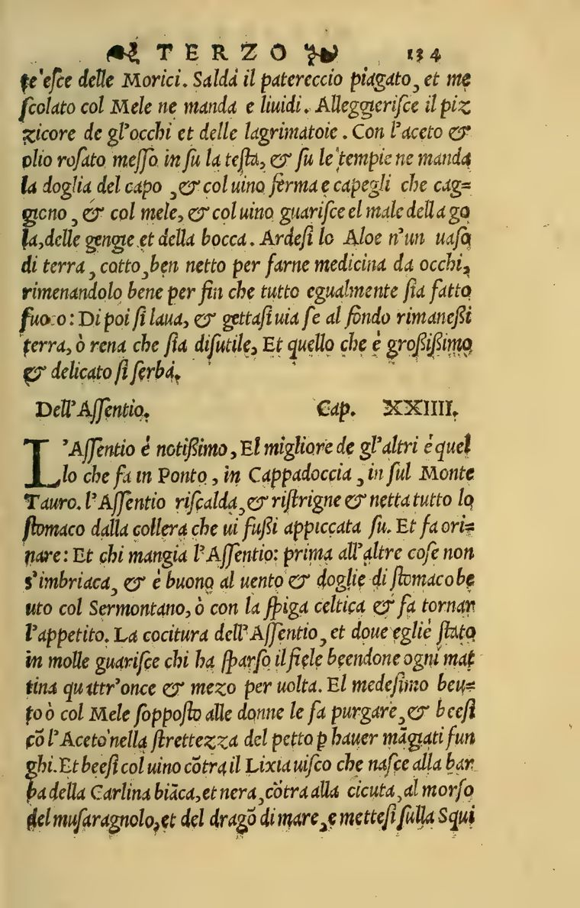

Landmark work · c. 1550 BC · Thebes
Papyrus Ebers
The oldest substantially complete pharmacological text: 110 columns of hieratic prescriptions — myrrh plasters, remedies of the eye, the physician’s incantations — streamed column by column beside Joachim’s 1890 German translation.
110 columns
2 witnesses
← read right to left
 c. 1550 BC · Thebes
c. 1550 BC · Thebes
Papyrus Ebers
Hieratic roll, Leipzig — with Joachim’s German translation (1890).
 1578 · China
1578 · China
Ben Cao Gang Mu 本草綱目
Li Shizhen’s great synthesis — Hongbaozhai woodblock ed., 1888.

1st c. AD · AnatoliaDioscorides, De materia medica
The spine of Western pharmacy, read through its Renaissance translators.